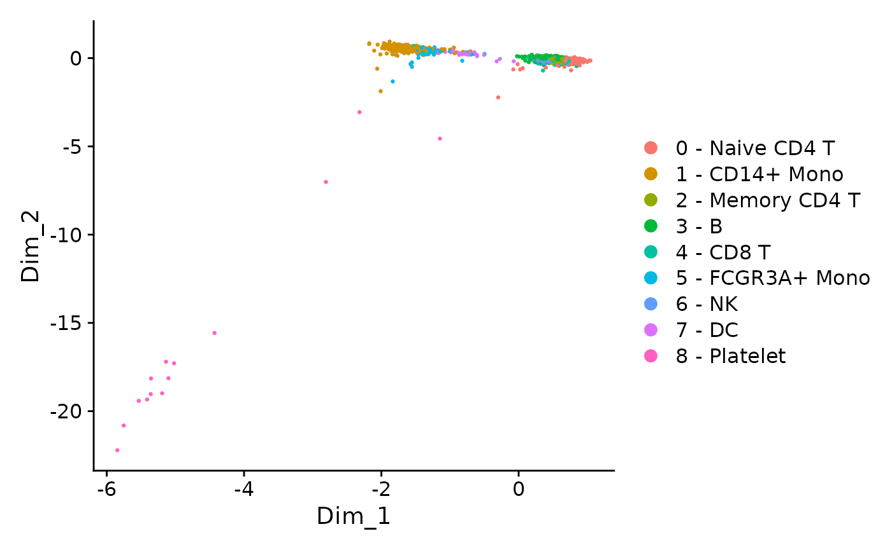
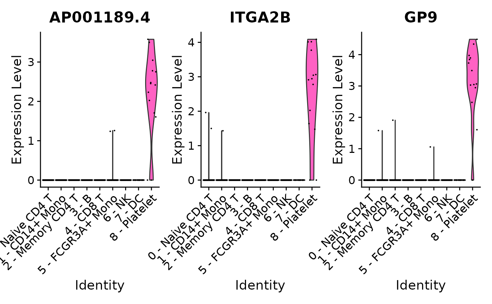
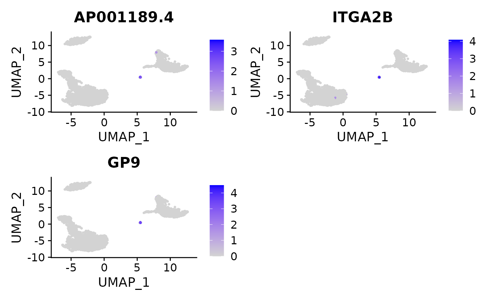
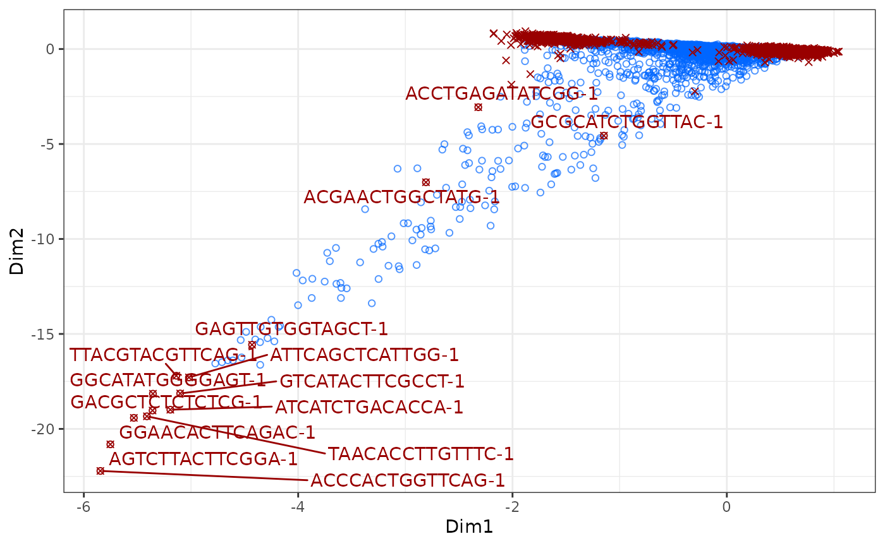
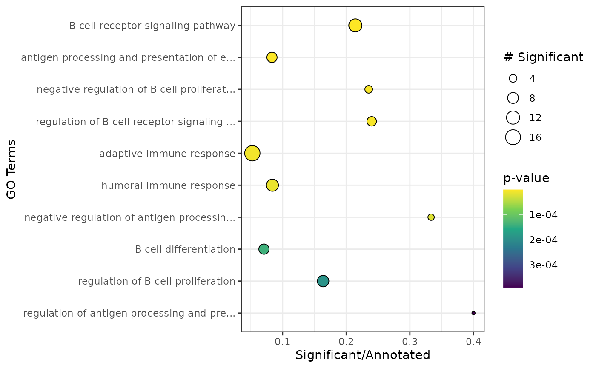

Analyzing data with APL
Elzbieta Gralinska
Max Planck Institute for Molecular Genetics, Berlin, Germanygralinska@molgen.mpg.de
Clemens Kohl
Max Planck Institute for Molecular Genetics, Berlin, Germanykohl@molgen.mpg.de
Martin Vingron
Max Planck Institute for Molecular Genetics, Berlin, Germanyvingron@molgen.mpg.de
APL.RmdAbstract
This package performs correspondence analysis (CA) and allows to identify cluster-specific genes using Association Plots (AP). Additionally, APL computes the cluster-specificity scores for all genes which allows to rank the genes by their specificity for a selected cell cluster of interest.
Introduction
“APL” is a package developed for computation of Association Plots, a method for visualization and analysis of single cell transcriptomics data. The main focus of “APL” is the identification of genes characteristic for individual clusters of cells from input data.
When working with APL package please cite:
Association Plots: Visualizing associations in high-dimensional correspondence analysis biplots
Elzbieta Gralinska, Martin Vingron
bioRxiv 2020.10.23.352096; doi: https://doi.org/10.1101/2020.10.23.352096A citation can also be obtained in R by running citation("APL"). For a mathematical description of the method, please refer to the manuscript.
Installation
To install the APL from Bioconductor, run:
if (!requireNamespace("BiocManager", quietly = TRUE))
install.packages("BiocManager")
BiocManager::install("APL")Alternatively the package can also be installed from GitHub:
library(devtools)
install_github("VingronLab/APL")To additionally build the package vignette, run instead
install_github("VingronLab/APL", build_vignettes = TRUE, dependencies = TRUE)Building the vignette will however take considerable time.
pytorch installation
In order to decrease the computation time of the singular value decomposition (SVD), we highly recommend the installation of pytorch. More information on the pytorch installation is given below. Instead of installing pytorch, users can also opt to use the R native SVD. For this, please use the argument python = FALSE wherever applicable in this vignette.
Install pytorch with reticulate
library(reticulate)
install_miniconda()
conda_install(envname = "r-reticulate", packages = "numpy")
conda_install(envname = "r-reticulate", packages = "pytorch")Manually install pytorch with conda
To install pytorch please download the appropriate Miniconda installer for your system from the conda website. Follow the installation instructions on their website and make sure the R package reticulate is also installed before proceeding. Once installed, list all available conda environments via conda info --envs
One of the environments should have r-reticulate in its name. Depending on where you installed it and your system, the exact path might be different. Activate the environment and install pytorch into it.
conda activate ~/.local/share/r-miniconda/envs/r-reticulate # change path accordingly.
conda install numpy
conda install pytorchPreprocessing
Setup
In this vignette we will use the 3k Peripheral Blood Mononuclear Cell (PBMC) data from 10x Genomics as an example. To obtain the data necessary to follow the vignette we use the Bioconductor package TENxPBMCData.
Besides the package APL we will use the single-cell RNA-seq analysis suite Seurat (V. 4.0.4) to preprocess the data, but the preprocessing could equally be done with SingleCellExperiment and scater\scran. For the preprocessing we follow the Guided Clustering Tutorial from the Seurat vignette. For details about the data preprocessing please refer to their website.
Loading the data
We start with the loading and preprocessing of the 3k PBMC data.
sce <- TENxPBMCData(dataset = "pbmc3k")
rownames(sce) <- rowData(sce)$Symbol_TENx
colnames(sce) <- colData(sce)$Barcode
pbmc <- CreateSeuratObject(counts = as.matrix(counts(sce)),
assay = "RNA",
project = "pbmc3k",
min.cells = 3,
min.features = 200,
meta.data = as.data.frame(colData(sce)))
#> Warning: Non-unique features (rownames) present in the input matrix, making
#> unique
#> Warning: The following arguments are not used: row.names
#> Warning: Feature names cannot have underscores ('_'), replacing with dashes
#> ('-')
pbmc[["percent.mt"]] <- PercentageFeatureSet(pbmc, pattern = "^MT-")
# Filter data
pbmc <- subset(pbmc, subset = nFeature_RNA > 200 & nFeature_RNA < 2500 & percent.mt < 5)
no_zeros_rows <- rowSums(pbmc, slot = "counts") > 0
pbmc <- pbmc[no_zeros_rows,]Normalization, PCA & Clustering
Association Plots from APL should be computed based on the normalized expression data. Therefore, we first normalize the counts from the 3k PBMC data. For now, APL requires the data to be clustered beforehand. That’s why we also do the cell clustering.
# Normalization
pbmc <- NormalizeData(pbmc,
normalization.method = "LogNormalize",
scale.factor = 10000,
verbose = FALSE)
pbmc <- FindVariableFeatures(pbmc,
# selection.method = "vst",
nfeatures = 2000,
verbose = FALSE)
# Scaling
all.genes <- rownames(pbmc)
pbmc <- ScaleData(pbmc,
features = all.genes,
verbose = FALSE)
# Run PCA
pbmc <- RunPCA(pbmc,
features = VariableFeatures(object = pbmc),
verbose = FALSE)
# Cell clustering
pbmc <- FindNeighbors(pbmc, dims = 1:10, verbose = FALSE)
pbmc <- FindClusters(pbmc, resolution = 0.5, verbose = FALSE)
pbmc <- RunUMAP(pbmc, dims = 1:10, verbose = FALSE)
#> Warning: The default method for RunUMAP has changed from calling Python UMAP via reticulate to the R-native UWOT using the cosine metric
#> To use Python UMAP via reticulate, set umap.method to 'umap-learn' and metric to 'correlation'
#> This message will be shown once per session
new.cluster.ids <- c("0 - Naive CD4 T",
"1 - CD14+ Mono",
"2 - Memory CD4 T",
"3 - B",
"4 - CD8 T",
"5 - FCGR3A+ Mono",
"6 - NK",
"7 - DC",
"8 - Platelet")
names(new.cluster.ids) <- levels(pbmc)
pbmc <- RenameIdents(pbmc, new.cluster.ids)
pbmc$cell_type <- Idents(pbmc)
DimPlot(pbmc, reduction = "umap", label = FALSE, pt.size = 0.5)Quick start
The fastest way to compute the Association Plot for a selected cluster of cells from the input data is by using a wrapper function runAPL(). runAPL() automates most of the analysis steps for ease of use.
For example, to generate the Association Plot for the B cells (cluster: “3 - B”) we can use the following command:
runAPL(pbmc,
assay = "RNA",
slot = "data",
top = nrow(pbmc),
group = which(pbmc$seurat_clusters == 3),
type = "ggplot")
#>
|
| | 0%
|
|======================================================================| 100%
#>
#> Using 222 dimensions. Subsetting.
#>
|
| | 0%
|
|======================= | 33%
|
|=============================================== | 67%
|
|======================================================================| 100% The generated Association Plot is computed based on the log-normalized count matrix. By default
The generated Association Plot is computed based on the log-normalized count matrix. By default runAPL uses the top 5,000 most variable genes in the data, but the data can be subset to any number of genes by changing the value for the argument top. In the above-presented example we keep all genes to ensure that marker genes for smaller clusters are also included. The dimensionality of the CA is determined automatically by the elbow rule descibed below (see here). This default behaviour can be overriden by setting the dimensions manually (parameter dims). The cluster-specificity score ( ) for each gene is also calculated (score = TRUE). In order to better explore the data, type can be set to "plotly" to obtain an interactive plot. runAPL has many arguments to further customize the output and fine tune the calculations. Please refer to the documentation (?runAPL) for more information. The following sections in this vignette will discuss the choice of dimensionality and the -score.
Step-by-step way of computing Association Plots
Alternatively, Association Plots can be computed step-by-step. This allows to adjust the Association Plots to user’s needs. Below we explain each step of the process of generating Association Plots.
Correspondence Analysis
The first step of Association Plot computations is correspondence analysis (CA). CA is a data dimensionality reduction method similar to PCA, however it allows for a simultaneous embedding of both cells and genes from the input data in the same space. In this example we perform CA on the log-normalized count matrix from the 3k PBMC data.
# Computing CA on logcounts
logcounts <- as.matrix(GetAssayData(pbmc, slot = "data"))
ca <- cacomp(obj = logcounts,
top = nrow(pbmc),
python = TRUE)
# The above is equivalent to:
# ca <- cacomp(obj = pbmc,
# assay = "RNA",
# slot = "data",
# top = nrow(pbmc),
# python = TRUE)The function cacomp accepts as an input any matrix with non-negative entries, be it a single-cell RNA-seq, bulk RNA-seq or other data. For ease of use, cacomp accepts also Seurat and SingleCellExperiment objects, however for these we additionally have to specify via the assay and/or slot (for Seurat) parameter from where to extract the data. Importantly, in order to ensure the interpretability of the results cacomp (and related functions such as runAPL) requires that the input matrix contains both row and column names.
When performing a feature selection before CA, we can set the argument top to the desired number of genes with the highest variance across cells from the input data to retain for further analysis. By default, only the top 5,000 most variable genes are kept. For this vignette we keep all genes in the data to ensure that also genes from smaller clusters such as the platelets are kept. In many cases however 5,000 genes are a good compromise between computational time and keeping most relevant genes.
The output of cacomp is an object of class cacomp:
ca
#> cacomp object with 2638 columns, 13713 rows and 2637 dimensions.
#> Calc. standard coord.: std_coords_rows, std_coords_cols
#> Calc. principal coord.: prin_coords_rows, prin_coords_cols
#> Calc. APL coord.:
#> Explained inertia: 0.8% Dim1, 0.6% Dim2As can be seen in the summarized output, by default both types of coordinates in the CA space (principal and standardized) are calculated. Once the coordinates for the Association Plot are calculated, they will also be shown in the output of cacomp. Slots are accessed through an accessor function:
cacomp_slot(ca, "std_coords_cols")[1:5, 1:5]
#> Dim1 Dim2 Dim3 Dim4 Dim5
#> AAACATACAACCAC-1 0.69703119 -0.09113136 -0.41134163 0.32559771 -0.272531983
#> AAACATTGAGCTAC-1 0.07402344 0.02951448 1.40628242 -1.36663142 -0.154395581
#> AAACATTGATCAGC-1 0.60068885 -0.12408014 -0.50940106 0.53809503 -0.001027849
#> AAACCGTGCTTCCG-1 -1.50638399 0.43243122 -0.02952732 0.03923192 -0.486999974
#> AAACCGTGTATGCG-1 0.27353640 -0.02000082 -2.00853340 -2.85132099 0.085657719In the case of Seurat and SingleCellExperiment objects, we can alternatively set return_input = TRUE to get the input object back, with the CA results computed by “APL” and stored in the appropriate slot for dimension reduction. This also allows for using the plotting functions that come with these packages:
pbmc <- cacomp(obj = pbmc,
assay = "RNA",
slot = "data",
top = nrow(pbmc),
return_input = TRUE,
python = TRUE)
DimPlot(pbmc, reduction = "CA", label = FALSE, pt.size = 0.5)
However, some functions such as apl_coords() require information that cannot be stored in the single-cell container objects. It is therefore often easier to work with a cacomp object instead. We can convert Seurat or SingleCellExperiment objects which have CA results stored to a cacomp object using the function as.cacomp():
# Converting the object pbmc to cacomp
ca <- as.cacomp(pbmc)Reducing the number of CA dimensions
When working with high-dimensional data, after singular value decomposition there will be often many dimensions which will be representing the noise in the data. That’s why generating Association Plots should be preceded by data dimension reduction step.
The number of dimensions to retain can be computed using the function pick_dims. This function offers three standard methods which we implemented:
elbow rule (
method = "elbow_rule") - the number of dimensions to retain is calculated based on scree plots generated for randomized data, and corresponds to a point in the plot where the band of randomized singular values enters the band of the original singular values,80% rule (
method = "maj_inertia") - only those first dimensions are retained which in total account for >= 80% of total inertia,average rule (
method = "avg_inertia") - only those dimensions are retained which account for more inertia than a single dimension on average.
Additionally, the user can compute a scree plot to choose the number of dimensions by themselves:
pick_dims(ca,
method = "scree_plot") +
xlim(c(0,75))
#> Warning: Removed 2562 rows containing missing values (position_stack).
#> Warning: Removed 1 rows containing missing values (geom_col).
#> Warning: Removed 2562 row(s) containing missing values (geom_path).In the scree plot above we can see that the first dimension explains only ~0.75% of the total inertia and we observe the “jump” in the scree plot at roughly 15 dimensions. The first dimensions however explain only a small amount of the total inertia.
Here we compute the number of dimensions using the elbow rule. For demonstration, only five data permutations are computed:
pd <- pick_dims(ca,
mat = GetAssayData(pbmc, slot = "data"),
method = "elbow_rule",
reps = 5,
python = TRUE)
pd
#> [1] 223In this case the elbow rule leads to a much higher number of dimensions.
# Compute the amount of inertia explained by each of the dimensions
D <- cacomp_slot(ca, "D")
expl_inertia <- (D^2/sum(D^2))*100
# Compute the amount of intertia explained
# by the number of dimensions defined by elbow rule
sum(expl_inertia[seq_len(pd)])
#> [1] 18.654In this example the elbow rule suggests to keep 223 dimensions that explain 18.65% of the total inertia from the data.
Finally, we can reduce the data dimension to the desired number of dimensions:
ca <- subset_dims(ca, dims = pd)Association Plots
When working with single-cell transcriptomics data we are often interested in which genes are associated to a cluster of cells. To reveal such genes we can compute an Association Plot for a selected cluster of cells. In the following example we want to generate an Association Plot for the cluster of platelets:
# Specifying a cell cluster of interest
platelets <- which(pbmc$cell_type == "8 - Platelet")
# Calculate Association Plot coordinates for platelets from 3k PBMC data
ca <- apl_coords(ca, group = platelets)After computing the coordinates of genes and cells in the Association Plot we are able to plot the results using the apl function.
# Plot APL
apl(ca,
row_labs = TRUE,
rows_idx = c("ITGA2B", "PF4", "GP1BA", "TUBB1"), # platelet marker genes
type = "ggplot") # type = "plotly" for an interactive plotIn the Association Plot all genes are represented by blue circles. The further to the right a gene is located the more associated it is with the chosen cluster of cells. Additionally, the lower the y-axis value, the more specific it is for the selected cluster. Additionally, it is possible to highlight in the Association Plot any set of genes. In the example above we additionally highlighted four genes (“ITGA2B”, “PF4”, “GP1BA”, “TUBB1”) which are known to be marker genes for platelets. As we can see in the plot, they are located in the right part of the plot, which confirms their specificity for platelets.
By default we plot only the genes in the Association Plot. To also display the cells in the Association Plot, use the argument show_cols = TRUE. This way we can identify other cells which show similar expression profiles to the cells of interest. Cells that belong to the cluster of interest will be colored in red, and all remaining cells will be colored in violet. Furthermore, an interactive plot in which you can hover over genes to see their name can be created by setting type = "plotly".
Association Plots with the scores
The score allows us to rank genes by their specificity for a selected cell cluster, and is computed for each gene from the Association Plot separately. The higher the score of a gene, the more characteristic its expression for the investigated cell cluster. The scores can be computed using the apl_score function. To show the scores in the Association Plot use the argument show_score = TRUE in the apl function:
# Compute S-alpha score
# For the calculation the input matrix is also required.
ca <- apl_score(ca,
mat = as.matrix(GetAssayData(object = pbmc, slot = "data")),
reps = 5,
python = TRUE)
apl(ca,
show_score = TRUE,
type = "ggplot") By default, only genes that have a score larger than 0 are colored as these tend to be genes of interest and we consider them as cluster-specific genes. This cutoff can be easily changed through the score_cutoff argument to apl().
The scores are stored in the "APL_score" slot and can be accessed as follows:
head(cacomp_slot(ca, "APL_score"))
#> Rowname Score Row_num Rank
#> AP001189.4 AP001189.4 15.49974 8015 1
#> ITGA2B ITGA2B 15.24879 11215 2
#> GP9 GP9 15.22077 2854 3
#> LY6G6F LY6G6F 13.99465 4381 4
#> SEPT5 SEPT5 13.64891 13232 5
#> PVALB PVALB 13.25364 13384 6To see the expression of genes with the highest scores (or any selected genes) across all cell types from the data we can use the functions provided by Seurat:
scores <- cacomp_slot(ca, "APL_score")
VlnPlot(pbmc, features = head(scores$Rowname,3))
FeaturePlot(pbmc, features = head(scores$Rowname,3))
As expected, the 3 most highly scored genes are over-expressed in the platelet cluster.
Visualization of CA
In addition to Association Plots “APL” produces also other forms of the output. For instance, we can use “APL” to generate a two- and three-dimensional correspondence analysis projection of the data. The so-called biplot visualizes both cells and genes from the input data and can be created using the function ca_biplot. Alternatively, a three-dimensional data projection plot can be generated using the function ca_3Dplot. To generate such biplots a cacomp object is required.
# Specifying a cell cluster of interest
platelets <- which(pbmc$cell_type == "8 - Platelet")
# Creating a static plot
ca_biplot(ca, col_labels = platelets, type = "ggplot")
# Creating an interactive plot
# ca_biplot(ca, type = "plotly", col_labels = platelets)
# 3D plot
# ca_3Dplot(ca, col_labels = platelets)The above described plots give us a quick overview of the first 2 dimensions of the data (more dimensions can be plotted). As shown in the commented-out code, to interactively explore the projection of the data type = "plotly" can be set.
APL and GO enrichment analysis
After computing an Association Plot and identifying a set of genes specific for a selected cluster of cells we might be interested in conducting a Gene Ontology (GO) enrichment analysis of the identified gene set. To conduct the GO enrichment analysis of the B-cell specific genes (cluster 3 from the input data) idenitfied using Association Plot we first need to compute the coordinates of the genes in the Association Plot for B cells, as well as the score for each gene:
# Get indices of cells in cluster 3 (B cells)
c_three <- which(pbmc$seurat_clusters == 3)
# Calculate Association Plot coordinates of the genes and the \eqn{S_\alpha} scores
ca <- apl_coords(ca, group = c_three)
ca <- apl_score(ca,
mat = as.matrix(GetAssayData(object = pbmc, slot = "data")),
reps = 5,
python = TRUE)Now we can conduct GO enrichment analysis as implemented in the package topGO using the most cluster-specific genes from the Association Plot. By default we use all genes with an score higher than 0, but the cutoff may have to be adjusted depending on the dataset. In the example below we restrict it to genes with a score higher than 1 to restrict it to truly significant genes. In case that no scores were calculated, one can also choose to use the ngenes (by default 1000) genes with the highest x-coordinates by setting use_coords = FALSE.
enr <- apl_topGO(ca,
ontology = "BP",
organism = "hs",
score_cutoff = 1)The function plot_enrichment() was implemented to visualize the topGO results in form of a dotplot.
plot_enrichment(enr)
Additionally, in the Association Plot we can highlight genes of interest identified for instance using the GO enrichment analysis. In the example below we highlight two canonical B cell markers.
Session info
#> R version 4.0.3 (2020-10-10)
#> Platform: x86_64-pc-linux-gnu (64-bit)
#> Running under: Debian GNU/Linux 10 (buster)
#>
#> Matrix products: default
#> BLAS: /usr/lib/x86_64-linux-gnu/openblas-pthread/libblas.so.3
#> LAPACK: /usr/lib/x86_64-linux-gnu/openblas-pthread/libopenblasp-r0.3.12.so
#>
#> locale:
#> [1] LC_CTYPE=en_US.UTF-8 LC_NUMERIC=C
#> [3] LC_TIME=en_US.UTF-8 LC_COLLATE=en_US.UTF-8
#> [5] LC_MONETARY=en_US.UTF-8 LC_MESSAGES=en_US.UTF-8
#> [7] LC_PAPER=en_US.UTF-8 LC_NAME=C
#> [9] LC_ADDRESS=C LC_TELEPHONE=C
#> [11] LC_MEASUREMENT=en_US.UTF-8 LC_IDENTIFICATION=C
#>
#> attached base packages:
#> [1] parallel stats4 stats graphics grDevices utils datasets
#> [8] methods base
#>
#> other attached packages:
#> [1] SparseM_1.81 org.Hs.eg.db_3.12.0
#> [3] AnnotationDbi_1.52.0 ggplot2_3.3.3
#> [5] TENxPBMCData_1.8.0 HDF5Array_1.18.1
#> [7] rhdf5_2.34.0 DelayedArray_0.16.0
#> [9] Matrix_1.4-0 SingleCellExperiment_1.12.0
#> [11] SummarizedExperiment_1.20.0 Biobase_2.50.0
#> [13] GenomicRanges_1.42.0 GenomeInfoDb_1.26.1
#> [15] IRanges_2.24.0 S4Vectors_0.28.0
#> [17] BiocGenerics_0.36.0 MatrixGenerics_1.2.0
#> [19] matrixStats_0.57.0 SeuratObject_4.0.1
#> [21] Seurat_4.0.1 APL_0.99.0
#> [23] BiocStyle_2.18.1
#>
#> loaded via a namespace (and not attached):
#> [1] AnnotationHub_2.22.1 BiocFileCache_1.14.0
#> [3] systemfonts_1.0.3 plyr_1.8.6
#> [5] igraph_1.2.6 lazyeval_0.2.2
#> [7] splines_4.0.3 listenv_0.8.0
#> [9] scattermore_0.7 digest_0.6.27
#> [11] htmltools_0.5.2 GO.db_3.12.1
#> [13] fansi_0.4.1 magrittr_2.0.1
#> [15] memoise_2.0.0 tensor_1.5
#> [17] cluster_2.1.0 ROCR_1.0-11
#> [19] globals_0.14.0 pkgdown_2.0.1
#> [21] spatstat.sparse_2.0-0 colorspace_2.0-0
#> [23] rappdirs_0.3.1 blob_1.2.1
#> [25] ggrepel_0.9.1 textshaping_0.3.6
#> [27] xfun_0.28 dplyr_1.0.6
#> [29] crayon_1.4.1 RCurl_1.98-1.2
#> [31] jsonlite_1.7.2 org.Mm.eg.db_3.12.0
#> [33] graph_1.68.0 spatstat.data_2.1-0
#> [35] survival_3.2-7 zoo_1.8-9
#> [37] glue_1.4.2 polyclip_1.10-0
#> [39] gtable_0.3.0 zlibbioc_1.36.0
#> [41] XVector_0.30.0 leiden_0.3.7
#> [43] Rhdf5lib_1.12.1 future.apply_1.7.0
#> [45] abind_1.4-5 scales_1.1.1
#> [47] DBI_1.1.0 miniUI_0.1.1.1
#> [49] Rcpp_1.0.5 viridisLite_0.4.0
#> [51] xtable_1.8-4 reticulate_1.20
#> [53] spatstat.core_2.1-2 bit_4.0.4
#> [55] htmlwidgets_1.5.3 httr_1.4.2
#> [57] RColorBrewer_1.1-2 ellipsis_0.3.2
#> [59] ica_1.0-2 farver_2.0.3
#> [61] pkgconfig_2.0.3 dbplyr_2.1.1
#> [63] uwot_0.1.10 deldir_0.2-10
#> [65] sass_0.4.0 utf8_1.1.4
#> [67] labeling_0.4.2 tidyselect_1.1.0
#> [69] rlang_0.4.11 reshape2_1.4.4
#> [71] later_1.1.0.1 BiocVersion_3.12.0
#> [73] munsell_0.5.0 tools_4.0.3
#> [75] cachem_1.0.5 ExperimentHub_1.16.1
#> [77] generics_0.1.0 RSQLite_2.2.1
#> [79] ggridges_0.5.3 evaluate_0.14
#> [81] stringr_1.4.0 fastmap_1.1.0
#> [83] goftest_1.2-2 yaml_2.2.1
#> [85] ragg_1.2.1 knitr_1.36
#> [87] bit64_4.0.5 fs_1.5.0
#> [89] fitdistrplus_1.1-3 purrr_0.3.4
#> [91] RANN_2.6.1 nlme_3.1-151
#> [93] pbapply_1.4-3 future_1.20.1
#> [95] mime_0.9 compiler_4.0.3
#> [97] interactiveDisplayBase_1.28.0 curl_4.3
#> [99] plotly_4.9.3 png_0.1-7
#> [101] spatstat.utils_2.1-0 tibble_3.1.2
#> [103] bslib_0.3.1 stringi_1.5.3
#> [105] highr_0.8 RSpectra_0.16-0
#> [107] desc_1.3.0 lattice_0.20-41
#> [109] vctrs_0.3.8 rhdf5filters_1.2.1
#> [111] pillar_1.6.1 lifecycle_1.0.0
#> [113] BiocManager_1.30.15 spatstat.geom_2.1-0
#> [115] lmtest_0.9-38 jquerylib_0.1.4
#> [117] RcppAnnoy_0.0.18 data.table_1.13.2
#> [119] cowplot_1.1.1 bitops_1.0-6
#> [121] irlba_2.3.3 httpuv_1.5.4
#> [123] patchwork_1.1.1 R6_2.5.0
#> [125] bookdown_0.24 promises_1.1.1
#> [127] topGO_2.42.0 KernSmooth_2.23-18
#> [129] gridExtra_2.3 parallelly_1.21.0
#> [131] codetools_0.2-18 MASS_7.3-53
#> [133] assertthat_0.2.1 rprojroot_2.0.2
#> [135] withr_2.4.2 sctransform_0.3.2
#> [137] GenomeInfoDbData_1.2.4 mgcv_1.8-33
#> [139] rpart_4.1-15 grid_4.0.3
#> [141] tidyr_1.1.3 rmarkdown_2.11
#> [143] Rtsne_0.15 shiny_1.5.0